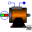
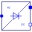
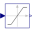

SMPM_BrakingTest example: PermanentMagnetSynchronousMachine acting as brake |
|
Diagram
{kind=link}
Information
This information is part of the Modelica Standard Library maintained by the Modelica Association.
A synchronous machine with permanent magnets starts braking from nominal speed by feeding a diode bridge, which in turn feeds a braking resistor. Since induced voltage is reduced proportional to falling speed, the braking resistance is set proportional to speed to achieve constant current and torque.
Default machine parameters are used
Parameters (4)
| R |
Value: 1 Type: Resistance (Ω) Description: Nominal braking resistance |
|---|---|
| wNominal |
Value: 2 * pi * smpmData.fsNominal / smpmData.p Type: AngularVelocity (rad/s) Description: Nominal speed |
| JLoad |
Value: 0.29 Type: Inertia (kg·m²) Description: Load's moment of inertia |
| smpmData |
Value: Type: SM_PermanentMagnetData Description: Synchronous machine data |
Components (15)
|  | smpm |
Type: SM_PermanentMagnet |
|---|---|---|
| ground |
Type: Ground |
|
| terminalBox |
Type: TerminalBox |
|
| inertiaLoad |
Type: Inertia |
|
| speedSensor |
Type: SpeedSensor |
|
| smpmData |
Type: SM_PermanentMagnetData Description: Synchronous machine data |
|
| currentQuasiRMSSensor |
Type: CurrentQuasiRMSSensor |
|
|  | diodeBridge2mPulse |
Type: DiodeBridge2mPulse |
| variableResistor |
Type: VariableResistor |
|
| gain |
Type: Gain |
|
|  | limiter |
Type: Limiter |
| ac2dc |
Type: Gain |
|
| starM |
Type: Star |
|
| voltageQuasiRMSSensor |
Type: VoltageQuasiRMSSensor |
|
| grounding |
Type: Resistor |